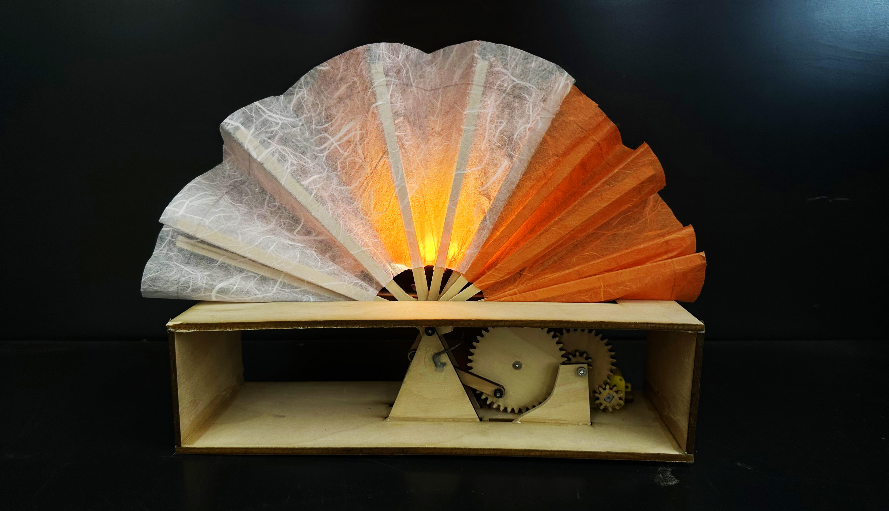
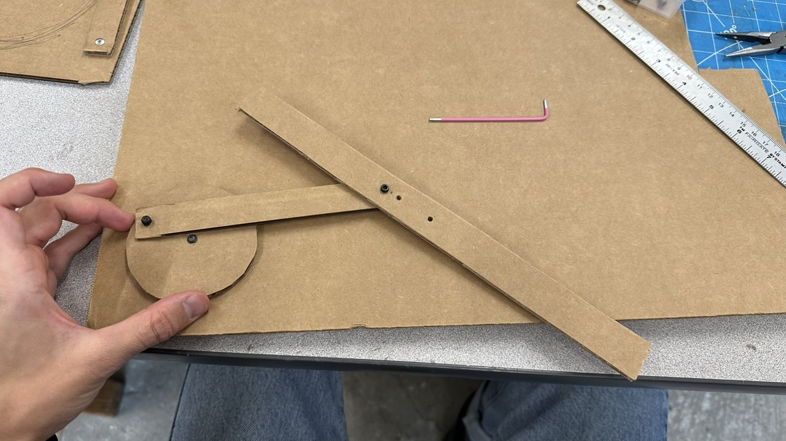
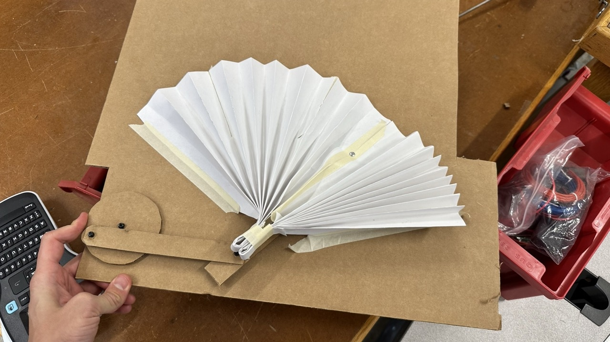
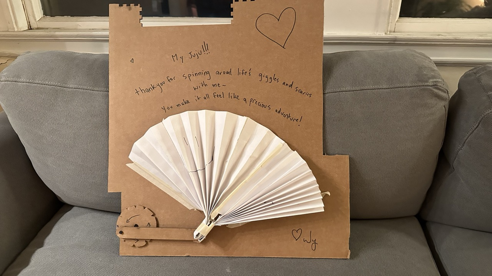
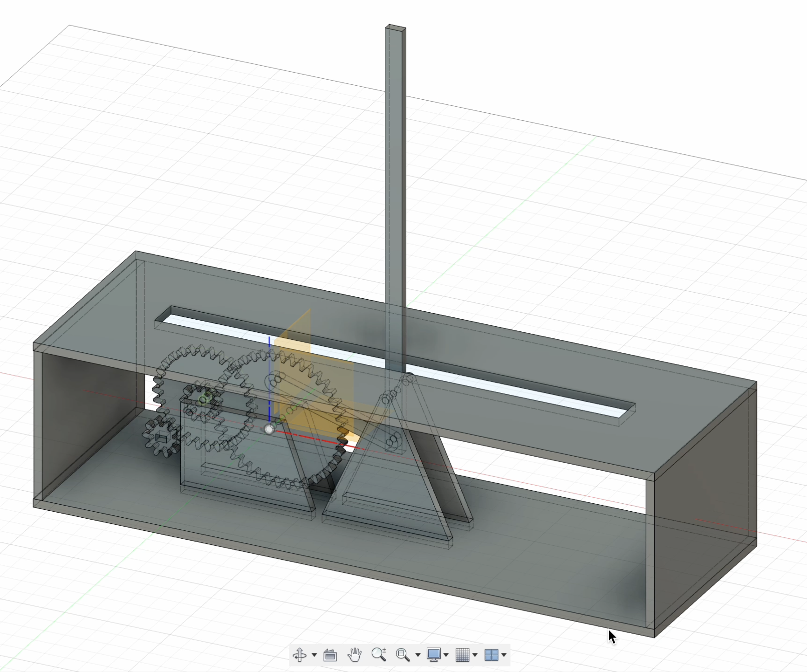
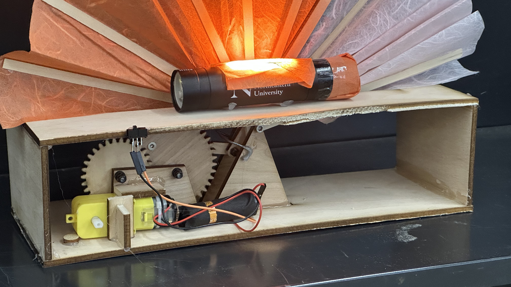

Week 3: Fabrication

Assignment 3: Movement
Fanlamp is a moving light that symbolizes the yin-yan ebb and flow process of life and creating. The orange side might mean stress, and the white side might mean peace; or the orange side might mean "motivated" and the white side means "fallow".
The process was significantly more involved than I'd anticipated - simply making a hole in the right part of a different Fusion sketch took hours. But a week ago, this lamp existed only in my mind. And now it's moving and producing light. Here's how it was made.
Levers and cams
Turning rotational movement into windshield-wiper movement was utterly unintuitive, and it's a game of millimeters. What I realized through experimentation with the peg board was that the most important variables were the distance between the center of the motor-wheel's axle and the lever-arm's axle -- and the lever-arm had to be at least 2x the diameter of the motor wheel. The Fan arm's axle position determines what angle swing the arm swings at.
Analogue prototype
Without touching Fusion, I tried to replicate the pegboard apparatus with cardboard.


Valentines Day Card
I drew two (hard to see) smiley and sad faces on the fan to turn it into a valentines day card.

Fusion
I designed the whole assembly in fusion. This is a screenshot of the final assembly -- at first I didn't have gears though, just a finger-spinnable wheel.

Cardboard Prototype
I lasercut the design in cardboard and assembled it. One challenge was that the screws bumped into other parts of the assembly during spinning - necessitating adding padding.
Wooden Version
In order to drive the fan with a motor, it needed gears - both to decrease the motor's speed, and to increase torque so that it could pull the fans. I designed gears in Fusion then realized that cardboard would crumble under the strain, so lasercut the entire assembly in wood. This also was an aesthetic improvement. Some of the joints are press-fit because the levers require millimeter precision and I needed to be able to nudge them.
Assembling gears
The gears worked! After manually drilling notches in every single pin hole to sink the screws in so they wouldn't run into other components.
The only struggle was that at certain extensions of the arms, the fan arm would flip down and jam. I devised a metal wire to hold it back from inflecting and ensure stability of the fan arm.
Building the fan
Honestly fans are so complicated. The form of the prototype valentines day card had too much resistance and too little splay for this design, so I needed to come up with a composite design using ultrathin balsa wood hand drilled and hand cut.


Electronics
Rigging the battery power without a holder was fun -- turned out one single 1.5V AA battery is sufficient to run the fan apparatus. I soldered a switch on and just taped the wires to the battery while waiting for my battery holder to arrive. I also secured the motor permanently in such a way that it could be disengaged for more testing if need be. The "lamp" part of the lamp is a usb light but ideally will be an LED array powered off the main battery.

Final Assembly
The fan works! It runs! And most importantly, it matches the aesthetic vision I had in my mind a week ago. So wild to learn so much - Fusion, gears, laser cutting, soldering, and to put it all together from digital to physical and back again - in a week. So much fun.